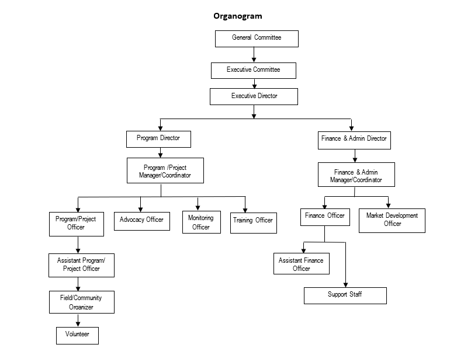

ARCO has a general committee consisting of 27 members — of which 6 are female and 21 are male from different professional and community backgrounds.
| Sl. No. | Name | Father's / Husband's Name | Designation | Address |
|---|---|---|---|---|
| 1. | Shahin Monowara Haque | Late Shamsul Haque | President | Par-Naogaon, Naogaon Sadar, Naogaon-6500 |
| 2. | Md. Sajjad Hossain | Md. Abul Kalam | Vice-President | Chuhar, Mithapukur, Rangpur 5460 |
| 3. | Ahmed Toufiqur Rahman | Mohammad Abdur Rahman | General Secretary | House 104, Road 17, Sector 14, Uttara, Dhaka |
| 4. | Md. Mohibur Rahman | Late. Md. Mojibur Rahman | Assistant General Secretary | Boalia, Naogaon Sadar, Naogaon 5891 |
| 5. | Md. Mamunur Rashid | Late Yadul Hossain | Treasurer | Boalia, Naogaon Sadar, Naogaon 5891 |
| 6. | Md. Abu Shahamid Khan | Amir Hossain Khan | Member | Durgapur, Kashimpur, Raninagar, Naogaon 6591 |
| 7. | D M Shahid Ashraful | Late. Abed Ali Dewan | Member | Vatara, Gulshan, Dhaka 1212 |
| 8. | Md. Zahidul Islam | Late Taser Uddin | Member | Stadiumpara, Par Naogaon, Naogaon 6500 |
| 9. | Rebeka Sultana | Late Hossain Ali | Member | Boalia, Naogaon Sadar, Naogaon 5891 |

| Permanent Staff | Volunteer | ||||
|---|---|---|---|---|---|
| Total | Female | Male | Total | Female | Male |
| 10 | 02 | 08 | 40 | 25 | 15 |
ARCO has established a formal oversight mechanism, supported by approved policies and manuals, to govern and manage the organization and its development programs. These frameworks provide clearly defined internal procedures and mechanisms for addressing legal affairs.